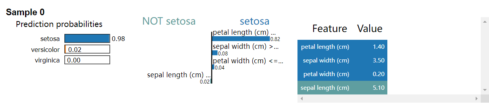

使用表格类解释器

简介
在这个教程中，我们将使用四个不同的解释器来解释表格数据的分类结果，这四个解释器包括 LIMETabular ，
SHAPKernel ， SHAPGradient 和 PseudoLinearCoef 。
以下教程的完整代码：using_tabular_explainers.py.
准备数据集
我们使用 Iris 数据集进行演示， 这个数据集包含了三种鸢尾花的花瓣长度和萼片长度。
import sklearn.datasets
import mindspore as ms
iris = sklearn.datasets.load_iris()
# 特征名称: ['sepal length (cm)', 'sepal width (cm)', 'petal length (cm)', 'petal width (cm)']
feature_names = iris.feature_names
# 类别名称: ['setosa', 'versicolor', 'virginica']
class_names = list(iris.target_names)
# 将数据和标签从 numpy 数组转换为 mindspore Tensor
# 使用前100个样本
data = ms.Tensor(iris.data, ms.float32)[:100]
labels = ms.Tensor(iris.target, ms.int32)[:100]
# 解释第一个样本
inputs = data[:1]
# 解释标签 'setosa'（类索引 0）
targets = 0
准备模型
这里我们定义一个简单的线性分类器。
import numpy as np
import mindspore.nn as nn
class LinearNet(nn.Cell):
def __init__(self):
super(LinearNet, self).__init__()
# 输入特征个数: 4
# 输出类别个数: 3
self.linear = nn.Dense(4, 3, activation=nn.Softmax())
def construct(self, x):
x = self.linear(x)
return x
net = LinearNet()
# 加载预训练参数
weight = np.array([[0.648, 1.440, -2.05, -0.977], [0.507, -0.276, -0.028, -0.626], [-1.125, -1.183, 2.099, 1.605]])
bias = np.array([0.308, 0.343, -0.652])
net.linear.weight.set_data(ms.Tensor(weight, ms.float32))
net.linear.bias.set_data(ms.Tensor(bias, ms.float32))
使用 LIMETabular
LIMETabular 针对一个复杂难解释的模型，提供一个局部可解释的模型来对单个样本进行解释。
from mindspore_xai.explainer import LIMETabular
# 将特征转换为特征统计数据
feature_stats = LIMETabular.to_feat_stats(data, feature_names=feature_names)
# 初始化解释器
lime = LIMETabular(net, feature_stats, feature_names=feature_names, class_names=class_names)
# 解释
lime_outputs = lime(inputs, targets, show=True)
print("LIMETabular:")
for i, exps in enumerate(lime_outputs):
for exp in exps:
print("对于第 {} 个样本的类别 {} 的解释：".format(i, class_names[targets]))
print(exp, '\n')
输出:
LIMETabular:
对于第 0 个样本的类别 setosa 的解释:
[('petal length (cm) <= 1.60', 0.8182714590301656),
('sepal width (cm) > 3.30', 0.0816516722404966), ('petal width (cm) <= 0.30', 0.03557190104069489),
('sepal length (cm) <= 5.10', -0.021441399016492325)]

LIMETabular 也支持可调用函数，例如：
def predict_fn(x):
return net(x)
# 初始化解释器
lime = LIMETabular(predict_fn, feature_stats, feature_names=feature_names, class_names=class_names)
使用 SHAPKernel
SHAPKernel 使用特殊的加权线性回归来计算每个特征的重要性。
from mindspore_xai.explainer import SHAPKernel
# 初始化解释器
shap_kernel = SHAPKernel(net, data, feature_names=feature_names, class_names=class_names)
# 解释
shap_kernel_outputs = shap_kernel(inputs, targets, show=True)
print("SHAPKernel:")
for i, exps in enumerate(shap_kernel_outputs):
for exp in exps:
print("对于第 {} 个样本的类别 {} 的解释：".format(i, class_names[targets]))
print(exp, '\n')
输出:
SHAPKernel:
对于第 0 个样本的类别 setosa 的解释:
[-0.00403276 0.03651359 0.59952676 0.01399141]
SHAPKernel 也支持可调用函数，例如：
# 初始化解释器
shap_kernel = SHAPKernel(predict_fn, data, feature_names=feature_names, class_names=class_names)
使用 SHAPGradient
SHAPGradient 使用预期梯度（积分梯度的一种扩展）来解释模型。
from mindspore_xai.explainer import SHAPGradient
# 初始化解释器
shap_gradient = SHAPGradient(net, data, feature_names=feature_names, class_names=class_names)
# 解释
shap_gradient_outputs = shap_gradient(inputs, targets, show=True)
print("SHAPGradient:")
for i, exps in enumerate(shap_gradient_outputs):
for exp in exps:
print("对于第 {} 个样本的类别 {} 的解释：".format(i, class_names[targets]))
print(exp, '\n')
输出:
SHAPGradient:
对于第 0 个样本的类别 setosa 的解释:
[-0.0112452 0.08389313 0.47006473 0.0373782 ]
使用 PseudoLinearCoef
PseudoLinearCoef 提供全局归因方法来测量分类器决策边界周围特征的敏感度。
from mindspore_xai.explainer import PseudoLinearCoef
# 初始化解释器
plc_explainer = PseudoLinearCoef(net, len(class_names), feature_names=feature_names, class_names=class_names)
# 解释
plc, relative_plc = plc_explainer(data, show=True)
print("伪线性系数:")
for target, target_name in enumerate(class_names):
print(f"{target_name} 类")
print(str(plc[target]))
print("\n相对伪线性系数:")
for target, target_name in enumerate(class_names):
for view_point, view_point_name in enumerate(class_names):
if target == view_point:
continue
print(f"{target_name} 相对于 {view_point_name}")
print(str(relative_plc[target, view_point]))
输出:
伪线性系数:
setosa 类
[-0.12420721 0.15363358 -0.44856226 -0.16351467]
versicolor 类
[ 0.03954152 -0.20367564 0.3246966 -0.17629193]
virginica 类
[-0.03425665 -0.04525428 0.44189668 0.20307252]
相对伪线性系数:
setosa 相对于 versicolor
[-0.12564947 0.15629557 -0.44782427 -0.16126522]
setosa 相对于 virginica
[-0.11122696 0.12967573 -0.45520434 -0.18375972]
versicolor 相对于 setosa
[ 0.02240782 -0.23672473 0.3889126 0.21666989]
versicolor 相对于 virginica
[ 0.21087858 0.1268154 -0.31746316 -0.22748768]
virginica 相对于 setosa
[ 0.07109812 -0.08392082 0.5585888 0.23082316]
virginica 相对于 versicolor
[-0.15152863 -0.00229146 0.31223866 0.17223847]